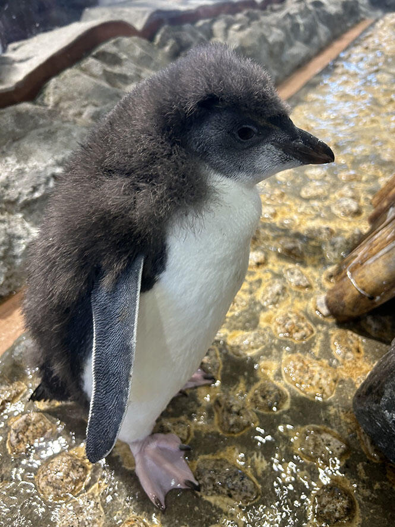

The Rockhopper Penguin is a species of penguin that is known for its distinctive yellow crest feathers and its ability to hop over rocks and rough terrain. They are found at sub-Antarctic islands within the New Zealand region, including Campbell, Auckland, and Antipodes Islands.

Rockhopper Penguins are medium-sized penguins, standing about 55 cm (22 inches) tall and weighing around 3 kg (6.6 pounds). They have black and white plumage, with a bright yellow crest that extends from their forehead to the back of their head. Their beak is orange-red, and they have red eyes.

These penguins are excellent swimmers and divers, feeding primarily on krill, fish, and squid. They are known for their agility in navigating rocky shorelines and can often be seen hopping from rock to rock as they make their way to their nesting sites.
Rockhopper Penguins breed in large colonies on rocky cliffs and islands. They build nests out of stones and vegetation, where they lay one or two eggs. Both parents take turns incubating the eggs and caring for the chicks once they hatch.
Despite their adaptability, Rockhopper Penguins face threats from climate change, habitat loss, and human activities such as fishing and pollution. Conservation efforts are underway to protect their populations and ensure their survival in the wild.
Back to Home